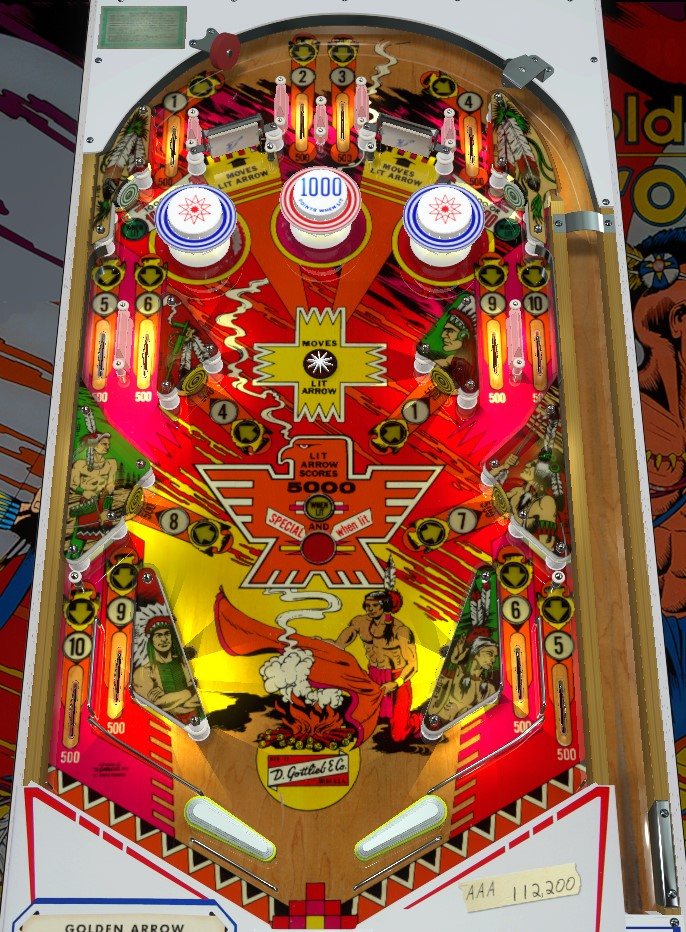

This game is included on The Pinball Primer for the purposes of education and historical completeness only. The Pinball Primer does not uphold or condone the depictions of Native Americans seen in this game's artwork which may be considered insensitive or stereotypical.
Shoot lit numbered lanes for 5,000 points apiece, or 10,000 if the titular Golden Arrow also happens to be lit. Once all the numbers are gone, this game becomes much more of a luckbox, with the only meaningful points coming from moving the Golden Arrow to an accessible shot and hitting it repeatedly for 5,000s (and specials).
There are 10 numbers around the table, with some appearing in more than one location.
1-2-3-4 are across the top of the table; spinners separate 1 and 2, as well as 3 and 4. 4 and 1 are also assigned to standup targets in the middle-left and middle-right respectively. 2 and 3 can only be collected from the center top lanes.
5-6-9-10 are available at the side lanes from left to right about halfway up the table. In reverse order, as 10-9-6-5, these numbers are also on the out/in lanes, from left to right. 7 and 8 can both only be collected from the lower left and right standup targets.
In addition to the numbered lanes and targets being lit with their number, one of the numbers will also be lit with the Golden Arrow, which increases the point value of that numbered lane/target. If the Golden Arrow is assigned to a number that appears in multiple places, both locations will be lit with said Golden Arrow. The center star rollover scores 100 points and advances the Golden Arrow, while the two spinners score 100 points and an Arrow advance per spin. The Arrow always advances through the numbers in sequence before looping around back to 1 if advanced past 10.
If a numbered lane or target is lit once (lit number OR lit Golden Arrow, but not both), it scores 5,000 points. If a numbered lane/target is lit with BOTH its number and the Golden Arrow, it scores 10,000 points. If the lane or target is not lit at all, it scores 500. Activating a numbered lane/target when the number is lit causes the number to unlight. Scoring a lane/target with the Golden Arrow lit does not extinguish or move the Golden Arrow light, however. When a number is collected, it stays unlit for the rest of the game, no matter what, If all 10 numbers are collected, the lane/target lit with the Golden Arrow will score a special in addition to the 5,000 points. Specials are always worth a free game or nothing; no option for points or extra balls.
If the game is set to 3 ball play instead of 5 ball play, the following pairs of numbers are tied together, so that collecting either one gives credit for both lit numbers: 2 and 3, 5 and 9, 6 and 10. I do not believe that the effect of the Golden Arrow is duplicated in this case, though; if both numbers 2 and 3 are lit, and 3 has the Golden Arrow, but the ball rolls through the 2, I believe you will get 5,000 points, not 10,000.
The center bumper always scores 1,000 points. The outer blue bumpers score 100 points in a 5-ball game or 1,000 points in a 3-ball game. The outer blue bumpers also alternate whether the green standup targets in the very top corners of the main playfield are lit. These standup targets score 1,000 points when not lit or 10,000 when lit. They cannot be shot for directly and heavily rely on pop bumper luck to be scored. Do not rely on them as a strategy, even late in the game where points are otherwise scarce.
Golden Arrow has a conventional in/out lane setup. From left to right, the in and out lanes act as 10, 9, 6, and 5 under the numbered lanes rules described above.
There is no end of ball bonus or bonus multiplier. Extra balls are entirely unavailable. Specials score a free game or nothing at all, unless a setting I'm unaware of can make them worth points, which would likely be either 5,000 or 10,000.